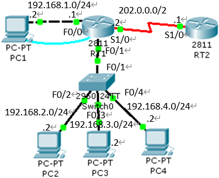

实训任务4：内外网连接

为路由器RT1和RT2各添加一个NM-4A/S模块，并完成下面的具体要求：
1）按拓扑图中所标识的信息重命名各设备。
2）在交换机上创建VLAN20、VLAN30和VLAN40，分别将PC2、PC3和PC4所连接口F0/2、F0/3和F0/4依次添加到对应的VLAN中；
交换机
Switch(config)# host Switch0
Switch0(config)# vlan 20
Switch0(config)# vlan 30
Switch0(config)# vlan 40
Switch0(config)# int f0/2
Switch0(config-if)# switchport access vlan 20
Switch0(config)# int f0/3
Switch0(config-if)# switchport access vlan 30
Switch0(config)# int f0/4
Switch0(config-if)# switchport access vlan 40
Switch0(config)# int f0/1
Switch(config-if)# switchport mode trunk
3）按拓扑图中所标识的信息配置路由器RT1的F0/0口和S1/0口的IP，并将F0/1口划分子接口，依次配置F0/1.2的IP为192.168.2.1/24，F0/1.3的IP为192.168.3.1/24，F0/1.4的IP为192.168.4.1/24。
路由器RT1
Router(config)# hostname RT1
RT1(config)# int f0/1
RT1(config-if)# no shut
RT1(config-if)# int f0/0
RT1(config-if)# ip add 192.168.1.1 255.255.255.0
RT1(config-if)# no sut
RT1(config-if)# int s1/0
RT1(config-if)# ip add 202.0.0.1 255.255.255.0
RT1(config-if)# clock rate 64000
RT1(config-if)# no shut
RT1(config-if)# int f0/1.2
RT1(config-subif)# encapsulation dot1q 20
RT1(config-subif)# ip add 192.168.2.1 255.255.255.0
RT1(config-subif)# int f0/1.3
RT1(config-subif)# encapsulation dot1q 30
RT1(config-subif)# ip add 192.168.3.1 255.255.255.0
RT1(config-subif)# int f0/1.4
RT1(config-subif)# encapsulation dot1q 40
RT1(config-subif)# ip add 192.168.4.1 255.255.255.0
路由器RT2
Router(config)# host RT2
RT2(config)# int s1/0
RT2(config-if)# ip add 202.0.0.2 255.255.255.0
RT2(config-if)# no shut
4）按拓扑图中标识信息设置各PC机的IP，网关对应使用RT1三个子接口的IP地址。
PC1的IP地址：192.168.1.2，子网掩码：255.255.255.0，网关：192.168.1.1
PC2的IP地址：192.168.2.2，子网掩码：255.255.255.0，网关：192.168.2.1
PC3的IP地址：192.168.3.2，子网掩码：255.255.255.0，网关：192.168.3.1
PC4的IP地址：192.168.4.2，子网掩码：255.255.255.0，网关：192.168.4.1
5）查看路由器RT1的路由表，并测试PC1与其他三台PC的连通性。
路由器RT1
Router# show ip route
PC1
pc> ping 192.168.2.2
pc> ping 192.168.3.2
pc> ping 192.168.4.2
6）通过PC1配置路由器RT1的远程登录密码为“star”，enable的明文口令为“star”，并通过Telnet方式登录到路由器。
路由器RT1
RT1(config)# line vty 0 4
RT1(config-line)# login
RT1(config-line)# password star
RT1(config)# enable password star
PC1
PC> telnet 192.168.1.1
Password: star
RT1>ena
Password: star
7）保存配置信息。
交换机
Switch0# write
路由器RT1
RT1# write
路由器RT2
RT2# write